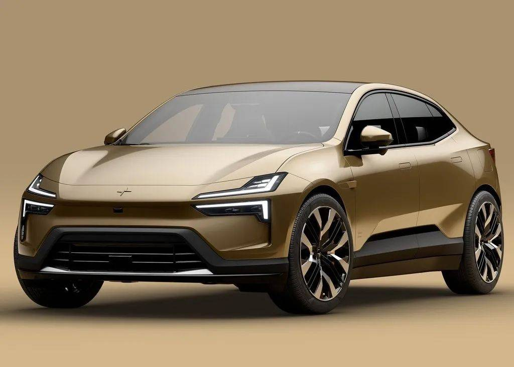

看得见的设计，
讲得明白的美学。
先认识一个美术概念，再对照真实产品图片，看它如何改变我们的视觉印象。

好看的车灯，究竟好看在哪里？
五种灯组，比较统一与变化、视觉动势、明度、均衡和节奏。

这件小雕塑，居然是榨汁器
从比例、正负形、节奏和金属明暗理解雕塑般的工具。
先认识一个美术概念，再对照真实产品图片，看它如何改变我们的视觉印象。

五种灯组，比较统一与变化、视觉动势、明度、均衡和节奏。
从比例、正负形、节奏和金属明暗理解雕塑般的工具。